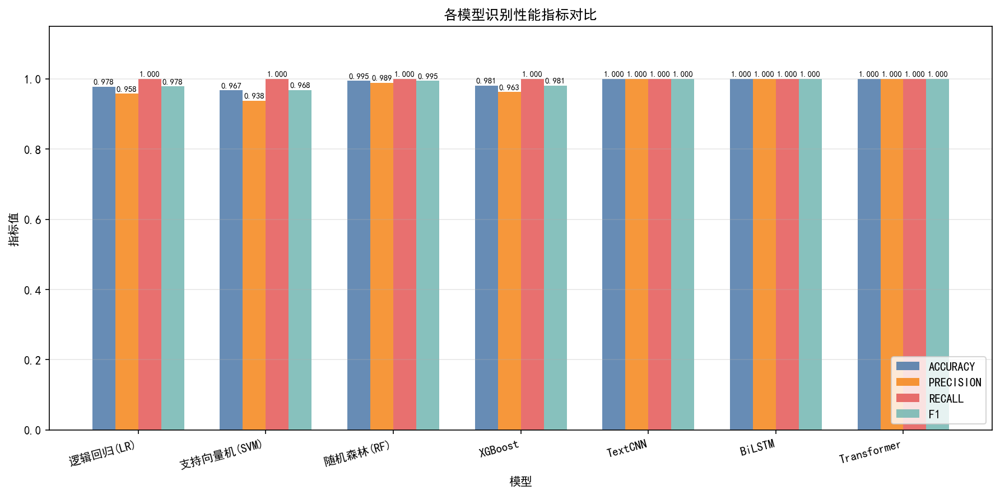
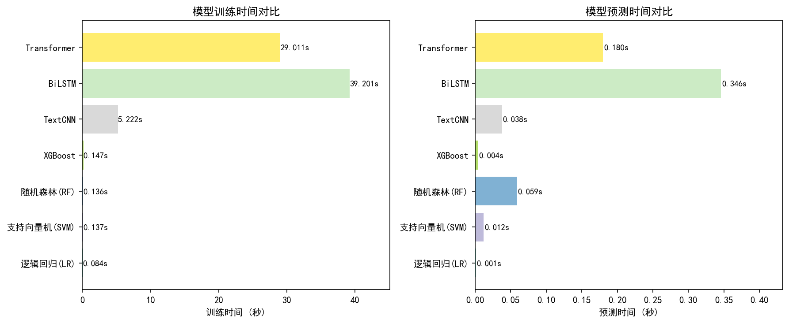
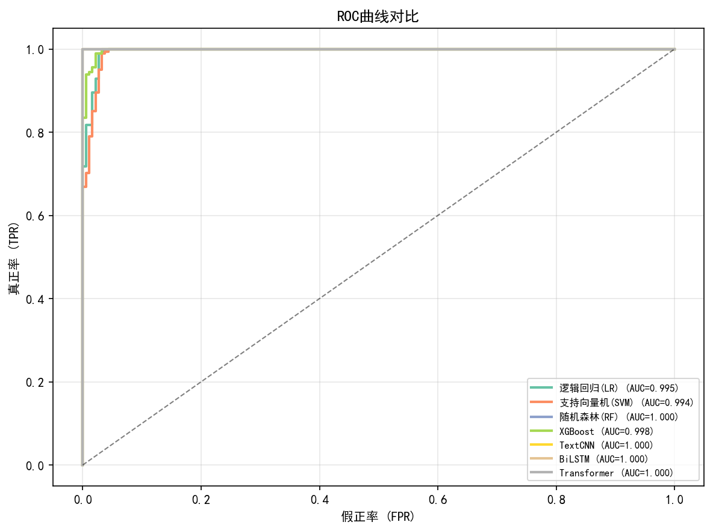
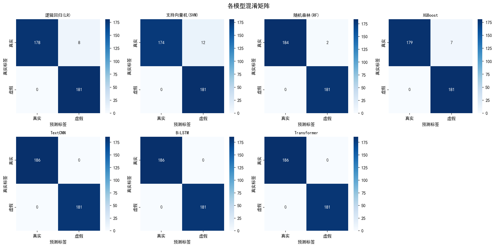
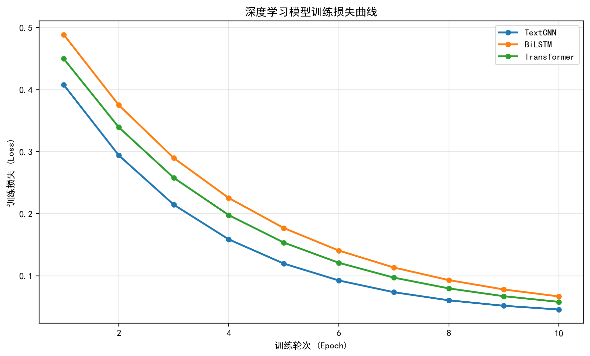
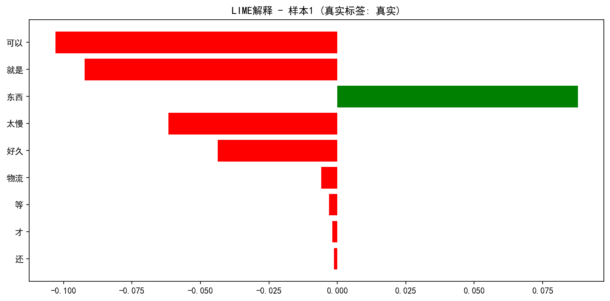
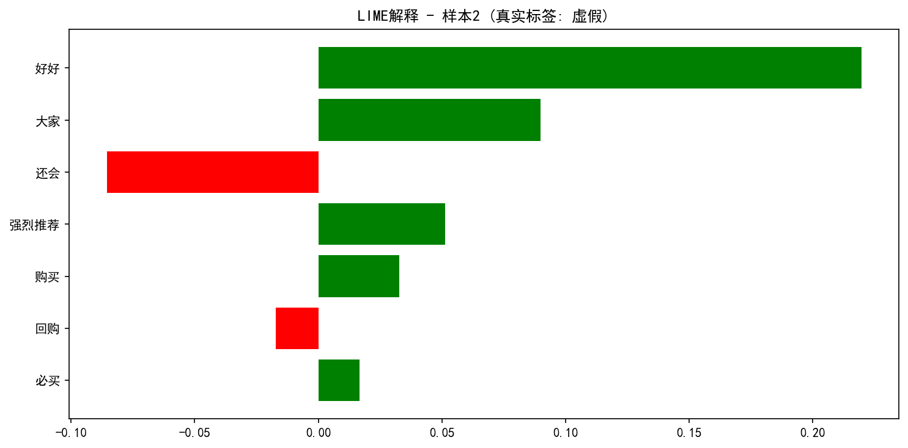
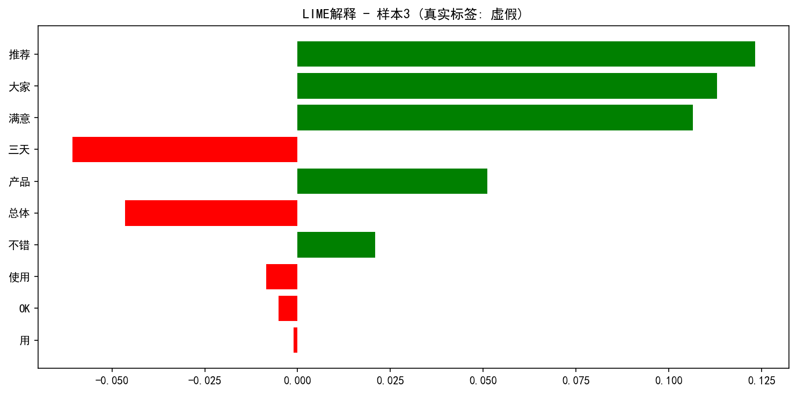
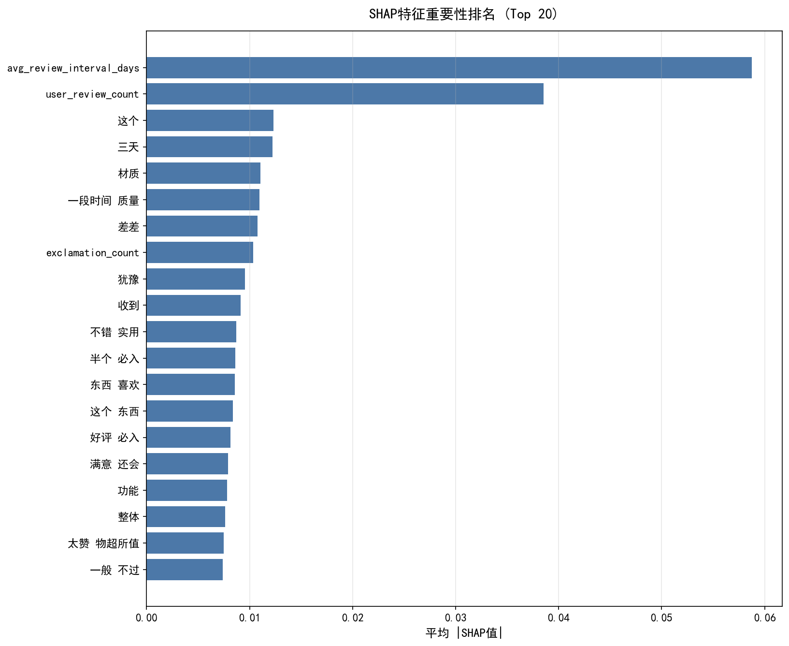
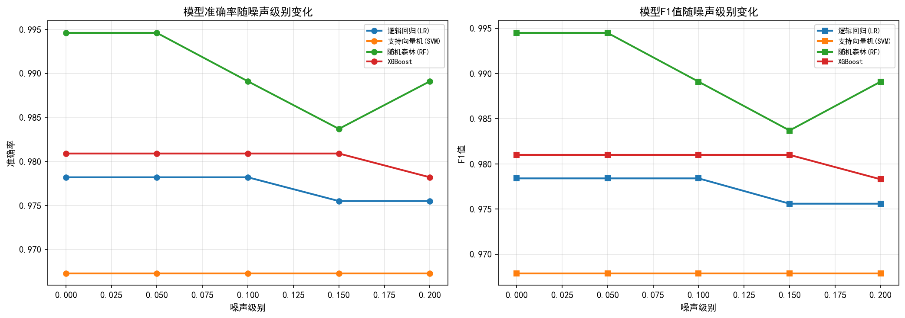

毕业设计可视化仪表盘 | 基于机器学习与深度学习的虚假评论识别
| 表名 | 用途 | 核心字段 | 关联 |
|---|---|---|---|
| products | 商品信息表 | product_id, product_name, category, shop_name, price, total_sales | 主表 |
| users | 用户信息表 | user_id, nickname, register_days, total_reviews, avg_rating, credit_level | 主表 |
| reviews | 评论主表 | review_id, review_text, rating, label, is_cleaned, is_duplicate | FK→products, users |
| crawl_logs | 爬取任务日志 | task_name, platform, target_products, total_requests, status | 独立 |
| cleaning_logs | 清洗日志 | total_before, duplicates_removed, total_after, cleaning_time | 独立 |
本研究数据集模拟主流电商平台的商品评论，共包含 2000条 评论数据， 其中真实评论和虚假评论各占50%（1:1平衡采样）。数据集按照 8:2 比例划分为训练集和测试集。
| 特征类别 | 特征名称 | 说明 |
|---|---|---|
| 文本特征 | TF-IDF向量 | unigram + bigram, 最大5000维 |
| 统计特征 | 评论长度 | 评论字符数 |
| 统计特征 | 感叹号数量 | ！和!的总数 |
| 统计特征 | 重复字符比 | 连续重复字符占比 |
| 情感特征 | 情感得分 | 0-1之间的情感极性 |
| 行为特征 | 用户评论数 | 该用户历史评论总数 |
| 行为特征 | 评论间隔 | 平均评论间隔天数 |
| 行为特征 | 评分 | 1-5星评分 |

图片未生成，请运行 main.py'" />
图片未生成，请运行 main.py'" />
图片未生成，请运行 main.py'" />
图片未生成，请运行 main.py'" />
图片未生成，请运行 main.py'" />LIME (Local Interpretable Model-agnostic Explanations) 通过在局部构建可解释的简单模型来解释单个预测结果， 揭示哪些词语对虚假评论判别起关键作用。



SHAP (SHapley Additive exPlanations) 基于博弈论Shapley值计算每个特征对模型预测的贡献， 揭示模型决策的全局特征重要性排名。

图片未生成，请运行 main.py'" />通过向评论文本中注入不同级别的噪声（字符随机插入、删除、替换），测试各模型在对抗样本下的性能表现， 评估模型的抗干扰能力和泛化稳定性。

图片未生成，请运行 main.py'" />